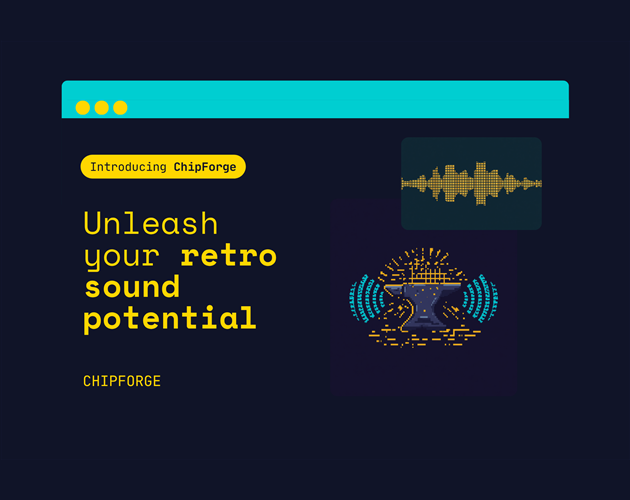

ChipForge
Procedural retro SFX and music for Unity. Every sound, zero audio files.

ChipForge synthesizes retro style sound effects and looping background music directly on the device. Sounds are small data assets you tweak in the inspector and preview instantly, without entering play mode. Nothing is baked to disk, so your build carries no audio files at all.
Sound effects
- Five waveforms: sine, square, triangle, saw, noise
- Pitch sweeps for lasers, jumps and power ups
- Colored noise for explosions and impacts
- Twelve ready made presets including Coin, Jump, Laser, Explosion and Fanfare
Music
- Seamless loops from chord progressions: pad, bass, arpeggio and a soft kick
- Six mood presets: Menu, Calm, Chill, Dark, Epic, Energetic
- Automatic crossfade between moods, so menu to gameplay to combat just works
Zero friction
- One line of code to play anything
- No scene setup, no prefabs, no dependencies
- Volume and mute persistence built in
- Renders at the device sample rate, which fixes the classic silent on 48 kHz Android devices problem
SfxPlayer.Play(coin);Who it is for
Game jammers, prototypers, solo developers without a sound budget, and anyone who wants a fully controllable audio layer with zero asset weight.
Requirements
Unity 6 or newer. Pure C# with full source included, tested on Windows and Android. It is focused on retro and chiptune style audio, not a full DAW or an orchestral music engine, and that focus is what keeps it small and simple.
Where to get it
- itch.io available now
- Unity Asset Store available now